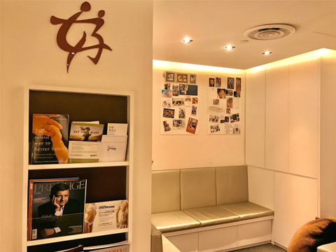
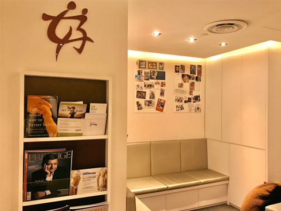

Make an appointment to start the process of starting your family
 



Dr Ann Tan is an experienced obstetrician who has been helping couples plan a healthy pregnancy for the past 20 years.
Being the first Singaporean to hold a Diploma of Fetal Medicine from the Fetal Medicine Foundation (an international body accrediting Fetal Maternal Medicine specialists), Dr Tan is dedicated to the field of prenatal diagnosis and care of both mother and foetus.
She is also a Public Service Scholar and has won several prestigious awards in her field of specialization including HMDP Scholarship for Fetal Echocardiography at Yale School of Medicine in 1995, the Young Investigator Award by the International Society of Ultrasound in Obstetrics in 1995 & Gynaecology & the Young FRCOG Award by the Hong Kong Royal College of Obstetrician & Gynaecologist in 1993.
Currently, Dr Ann Tan serves on the Women's Health Committee under the Health Promotion Board and is the Honorary Secretary for the Medical Board of Mount Elizabeth Hospital.
Pregnancy, birth and parenthood are exciting and fulfilling experiences. Your obstetrician will be your main care provider before, during and after birth. It is best that you are prepared of vital dates and information during your first visit for a pregnancy consultation, such as the date you had your last period, health information, etc. so you will not miss out anything important.
For mothers-to-be, your visit with the obstetrician should be a pleasant one. The role of your doctor is to guide you and help you treat pregnancy as a happy journey.
Your consultation with Dr Ann Tan is private time set aside for you to discuss all of your concerns and questions, directly, about any treatment you may be considering. No decision should be taken lightly and to ensure you are comfortable before the commencement of any treatment, Dr Tan requires one-to-one consultations with each patient so that both of you are confident in your decisions, and that she can confirm the treatment and care that is most appropriate for you. Your consultation is designed to fully inform you of the treatment or procedure that you are considering, and to discuss any other available options or considerations that may apply for your best outcomes.
Mothers should ensure that they stay healthy and well by practicing good hygiene, eating well, resting adequately and staying away from crowded places. Stay happy and healthy by eating sensibly, exercising judiciously and resting adequately to allow the best possible antenatal course for both you and your developing baby. For those with high-risk pregnancies, you may do the same. But be more conscious of the need for frequent reviews to monitor yourself and the baby, so as to detect any possibly complications early in its course and get them addressed immediately.
To experience a problem-free nine months, it is helpful to plan your pregnancy and take care of your health way in advance. Many couples do not realise that the first two weeks of fetal development occurs even before the urine pregnancy test appears positive.
One does not need to eat for two in a pregnancy, one merely needs to take in an extra 300 calories per day in general and this can easily be obtained from adding an extra nutritious snack per day. If you are carrying twins or triplets, your nutritional needs will increase proportionately.
The cost of treatment will also vary depending to the medication or procedure required. Before any procedure is conducted, financial counselling will be provided to the patient.
We want to make sure we cater enough time for your visit with our doctor. As such, we strongly advise that you make a prior appointment with our staff. Our fertility specialist will then meet you on the allocated time for a detailed discussion. Please call or email us for an appointment.
3 Mount Elizabeth #11-12
Mount Elizabeth Medical Centre
Singapore 228510
Tel: (+65) 6734 8188
Fax: (+65) 6262 0330
Email: mail@dranntan.com
Mon - Wed: 9 AM - 6 PM
Friday: 9 AM - 6 PM
Lunch Hour: 1 PM - 2 PM
Thurs & Sat: 9 AM - 1 PM
We are conveniently located at 3 Mount Elizabeth #11-12 Mount Elizabeth Medical Centre Singapore 228510. Location is in the heart of Orchard Road and Singapore’s premier medical hospital.
If you require further directions to our office, please call us at (+65) 6734 8188.